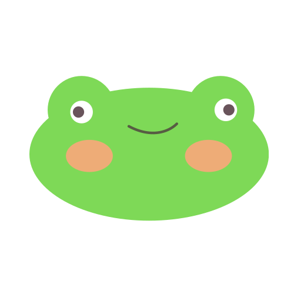

🔥 Dumb-Frog Insult Generator 🔥
Classic
Pirate
Shakespearean
Tech Roast
Gamer Trash Talk
Medieval Knight
Sci-Fi Roast
Cartoon Villain
Wizard
Detective Noir
Gothic Horror
Chef’s Kitchen
AI/Robot
Drama Queen
Wild West
Greek Mythology
Space Opera
Cyberpunk
Medieval Peasant
Dectective
Circus
Vampire
Surfer
Hacker
Ninja
Alien
Royalty
Librarian
Zombie
Mermaid
Fairy
Monk
Robotpunk
Dinosaur
Witch
Angel
Monster
Ghost
Generate Insult
Toggle Dark/Light Mode
Click the button for a legendary roast!